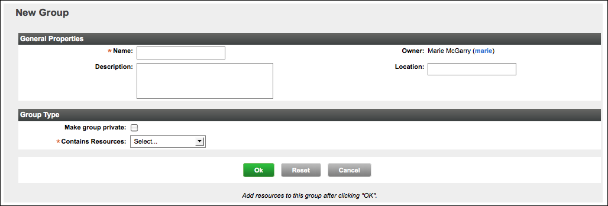

vFabric Hyperic 5.0 : ui-Inventory.Group.New
This page last changed on Jan 04, 2012 by mmcgarry.
Create a Group
- Click New Group on either:
- The Dashboard's Summary Counts portlet
- The Tools menu on the Browse > Resources page
- The New Group page appears.
 - On the New Group page, enter
- Name: The name of the group
- Description: (optional) A description of the group
- Location: (optional) The physical location of the group's hardware
- Make group private: Checkmark to make the group private. A private group is invisible to other users, including admin users. You can share a private group with other users by associating it with a role. Note that the name you assign to a private group is automatically prefixed with the string "private to username", where username is the creator's HQ username.
- Contains Resources: Select the type of group:
- Compatible/cluster - the group will contain resources of a single type. For example, "Linux" or "JBoss 4.2"
- Mixed - the group will contain multiple resource types. Mixed groups are useful for role-based resource access control.
- The Select Resource Type pulldown appears to the right of the Contains Resources — the options vary depending upon whether you are created a compatible or mixed group.
- For a compatible group, the Select Resource Type pulldown contains a list of all resource types in inventory, as shown in the thumbnail screenshot below.
- For a mixed group, the Select Resource Type pulldown contains these choices (as shown in the thumbnail screenshot below):
- Groups
- Platforms, Servers, & Services
- Applications
- For a compatible group, the Select Resource Type pulldown contains a list of all resource types in inventory, as shown in the thumbnail screenshot below.
- Click OK to create the group.
- The Inventory page for the new group appears. The screenshot below is the Inventory page for a new compatible group.

- The Inventory page for the new group appears. The screenshot below is the Inventory page for a new compatible group.


{kind=link}